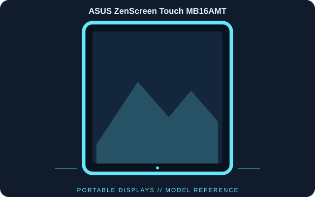

[ INDIVIDUAL COMPONENT // DISPLAYS ]
ASUS ZenScreen Touch MB16AMT
A 15.6-inch Full HD portable IPS monitor with ten-point projected-capacitive touch, an integrated battery and USB-C or micro-HDMI video input.

IDENTIFICATION: ASUS ZenScreen Touch MB16AMT; 2019 generation. Verify the full model code, region and hardware revision on the unit label. Published specifications describe this configuration; its matching manual and label take precedence if revisions differ.
Published specifications
| Catalog subcategory | Portable Displays |
|---|---|
| Exact model | ASUS ZenScreen Touch MB16AMT |
| Panel / native resolution | 15.6-inch IPS LCD, 1920 × 1080 (16:9) |
| Refresh rate | 60 Hz |
| Typical brightness / contrast | 250 cd/m² / 700:1 |
| Touch | 10-point projected-capacitive touch |
| Video inputs | USB-C with DisplayPort Alt Mode and micro-HDMI |
| Battery | 7800 mAh integrated battery; up to 4 hours (manufacturer rating) |
| Audio | Stereo speakers, 1 W × 2 |
| Physical features | Portable enclosure with smart case and landscape/portrait use |
Compatibility & connectivity notes
USB-C video requires DisplayPort Alt Mode support on the host. A micro-HDMI source needs a micro-HDMI-to-HDMI cable; HDMI itself does not carry touch, so use the manufacturer-prescribed USB data connection and independent USB-C power as needed. ASUS rates the integrated 7800 mAh battery for up to four hours; runtime depends on brightness and usage. Android ZenScreen Touch app compatibility and OS touch support vary by host.
Preservation notes
Record the complete model suffix, serial/date code, input selection, source device, cable or adapter, tested timing and observed condition. Retain the matching regional manual and any calibration or service records with the display. Follow the manufacturer’s cleaning and service instructions; do not open the display without appropriate training.
Manufacturer documentation & authoritative sources
- ASUS — ZenScreen Touch MB16AMT technical specificationsManufacturer documentation for the exact model.
- ASUS — MB16AMT support and manualsManufacturer documentation for the exact model.